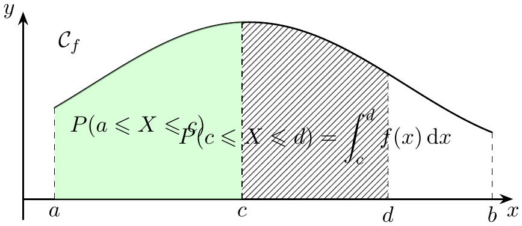
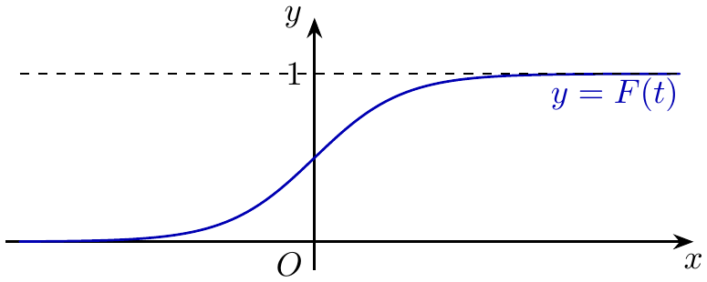
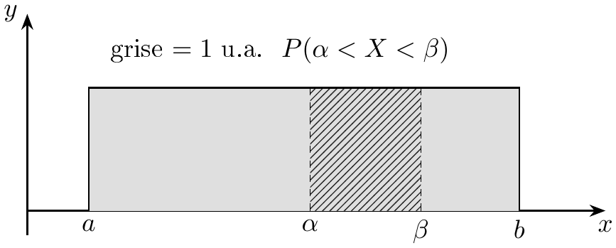
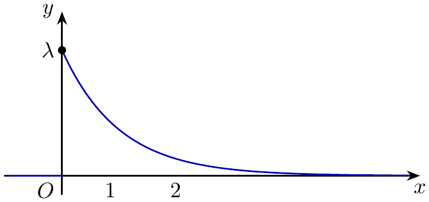

Chapitre 10 : Variables aléatoires continues
Terminale complémentaire · Chapitre 10 — Variables aléatoires continues · cours de Frederik de Peyrelongue
I. Définitions
1.1 Variable aléatoire continue
Une variable aléatoire $X$ est continue signifie qu'elle prend toutes les valeurs d'un intervalle de $\R$.
Variable aléatoire continue : $T$, temps d'attente du bus.
Variable aléatoire discrète : lancer de dé ; $X$ valeur de la face.
| $k$ | $1$ | $2$ | $3$ | $4$ | $5$ | $6$ |
| $\prob(X=k)$ | $1/6$ | $1/6$ | $1/6$ | $1/6$ | $1/6$ | $1/6$ |
1.2 Fonction de densité
Soient deux réels $a$ et $b$ avec $a\leqslant b$ : toute fonction $f$ vérifiant les trois conditions
- $f$ est continue sur $[a\,;b]$, sauf éventuellement en un nombre fini de valeurs ;
- $f$ est positive sur $[a\,;b]$ : pour tout $x\in[a\,;b]$, $f(x)\geqslant 0$ ;
- $\displaystyle\int_{a}^{b}f(x)\dx=1$
est appelée fonction de densité.
$f$ est continue sur $[2\,;4]$ et $\displaystyle\int_{2}^{4}f(x)\dx=1$ et $f(x)\geqslant 0$.
Cette fonction est une fonction de densité !
1.3 Probabilité
Soit $f$ une fonction de densité définie sur un intervalle $[a\,;b]$ de $\R$, avec $a\leqslant b$. Soit $X$ une variable aléatoire associée à la fonction de densité $f$.
Pour tout intervalle $[c\,;d]$ contenu dans $[a\,;b]$ avec $c\leqslant d$, la probabilité de l'événement « $X\in[c\,;d]$ » est donnée par

Soit $T$ la variable aléatoire de temps d'attente du bus qui suit une loi uniforme sur $[0\,;10]$.
Donc la probabilité d'attendre entre $2$ et $4$ minutes est
Remarques.
- $\prob(X=x)=0$ pour tout $x$.
On peut remplacer $\leqslant$ par $<$, en effet on peut considérer que $\prob(X=x)=0$.
\[ \prob(X=x)=\prob(x\leqslant X\leqslant x)=\int_{x}^{x}f(t)\dt=0 \]\[ \prob(X\leqslant x)=\prob(X<x)+\prob(X=x)=\prob(X<x). \]
1.4 Fonction de répartition
La fonction de répartition de la variable aléatoire $X$ est la fonction :
II. Propriétés
2.1 Propriétés de la fonction de répartition
Soit $X$ une variable aléatoire ayant pour $f$ une densité de probabilité : alors la fonction de répartition $F$ vérifie
si $x\in\left]-\infty\,;a\right]$, alors
\[ F(x)=\prob(-\infty\leqslant X\leqslant x)=\int_{-\infty}^{x}f(t)\dt ; \]si $x\in[a\,;b]$, alors
\[ F(x)=\int_{-\infty}^{x}f(t)\dt =\int_{-\infty}^{a}f(t)\dt+\int_{a}^{x}f(t)\dt =F(a)+\int_{a}^{x}f(t)\dt ; \]si $x\in\left]b\,;+\infty\right[$, alors
\[ F(x)=\int_{b}^{x}f(t)\dt+F(b) ; \]- \[ F(a)=\int_{-\infty}^{a}f(t)\dt \qquad\text{et}\qquad F(b)=\int_{-\infty}^{b}f(t)\dt=1-\int_{b}^{+\infty}f(t)\dt . \]
Si la fonction de densité ne s'annule pas sur $\R$, alors on calcule $\displaystyle\int_{m}^{x}f(t)\dt$ pour tous réels $m$ et $x$ tels que $m\leqslant x$. Ainsi $F(x)$ est égale à la limite, lorsque $m$ tend vers $-\infty$, de $\displaystyle\int_{m}^{x}f(t)\dt$. On peut donc noter :
\[ \text{Pour tout } x\in\R,\quad F(x)=\lim_{m\to-\infty}\int_{m}^{x}f(t)\dt=\int_{-\infty}^{x}f(t)\dt . \]
$F$ est la primitive de $f$ qui s'annule en $m$, autrement dit
Remarque. On peut étendre cette propriété à toute fonction $f$ de densité qui ne s'annule pas sur $\R$, autrement dit $\forall x\in\R$, $F'(x)=f(x)$.
La fonction de répartition $F$ d'une variable aléatoire continue $X$ a les propriétés suivantes :
- $F$ est une fonction croissante sur $\R$ ;
- pour tout $x\in\R$, $F(x)=\lim\limits_{m\to-\infty}\displaystyle\int_{m}^{x}f(t)\dt$ ;
- $\lim\limits_{x\to+\infty}F(x)=1$ et $\lim\limits_{x\to-\infty}F(x)=0$.

III. Caractéristiques d'une variable aléatoire continue
3.1 Moyenne – Variance – Écart type
L'espérance d'une variable aléatoire $X$ à densité sur un intervalle $[a\,;b]$ est :
où $f$ est la fonction de densité.
La variance d'une variable aléatoire $X$ à densité sur un intervalle $[a\,;b]$ est :
où $f$ est la fonction de densité.
L'écart type de $X$ est
Remarques.
Ces résultats sont à comparer aux variables aléatoires discrètes ou aux statistiques, où :
- la moyenne ou l'espérance mathématique se calcule : $E(X)=\displaystyle\sum_{i=1}^{n}x_{i}\,p(X=x_{i})$ ;
la variance de la variable aléatoire $X$ est donnée par le calcul
\[ V(X)=\sum_{i=1}^{n}x_{i}^{2}\,p(X=x_{i})-\bigl(E(X)\bigr)^{2} ; \]- l'expression de la densité $f(x)$ remplace la probabilité $p(X=x_{i})$ ;
- la notation « $\displaystyle\int_{a}^{b}$ » remplace la somme « $\displaystyle\sum_{i=1}^{n}$ ».
3.2 Propriétés
On retrouve les mêmes résultats que pour les variables aléatoires discrètes, soit :
Remarque. La linéarité de l'espérance est une conséquence de la linéarité de l'intégrale.
IV. Lois usuelles
4.1 Loi uniforme
4.1.1 Définition
On dit qu'une variable aléatoire $X$ suit une loi uniforme sur $I=[a\,;b]$ (avec $a<b$) lorsque sa densité de probabilité $f$ est une fonction constante.
Comme l'aire sous la courbe de $f$ doit être égale à $1$, cela impose :

1) $f$ est continue sur $[a\,;b]$ 2) $f\geqslant 0$ 3)
Donc c'est bien une fonction de densité : on l'appelle la loi de probabilité uniforme !
4.1.2 Propriétés
Pour tout intervalle $J=[\alpha\,;\beta]$ inclus dans $I=[a\,;b]$,
Soit $T$ la variable aléatoire du temps d'attente d'un bus qui a pour fonction de densité une loi uniforme sur l'intervalle $[0\,;30]$ : $U(t)=1/30$ sur $[0\,;30]$ et $0$ ailleurs.
soit une probabilité de $16{,}6$ %.
Remarque. La probabilité que $X$ soit dans un intervalle $J$ est le rapport de la largeur de l'intervalle $J$ sur la largeur de l'intervalle $[a\,;b]$.
- Si $x\in\left]-\infty\,;a\right]$, alors $F(x)=0$.
- Si $x\in[a\,;b]$, alors $F(x)=\displaystyle\int_{a}^{x}\frac{1}{b-a}\dt=\frac{x-a}{b-a}$.
- Si $x\in\left]b\,;+\infty\right[$, alors $F(x)=1$.
Preuve. Si $x\in\left]-\infty\,;a\right]$, $F(x)=\displaystyle\int_{-\infty}^{x}0\dt=0$.
Si $x\in[a\,;b]$, alors $F(x)=F(a)+\displaystyle\int_{a}^{x}\frac{1}{b-a}\dt=\frac{x-a}{b-a}$.
Si une variable aléatoire $X$ suit une loi uniforme sur $I=[a\,;b]$ (avec $a<b$), alors son espérance est
Preuve.
Application. Si $T$ suit la loi uniforme $U([0\,;30])$, alors
Si une variable aléatoire $X$ suit une loi uniforme sur $I=[a\,;b]$ (avec $a<b$), alors sa variance est
et son écart type est
Preuve. $V(X)=E\left((X-E(X))^{2}\right)=E\left(X^{2}\right)-E(X)^{2}$.
On calcule
4.1.3 Cas d'utilisation de la loi uniforme
Cette loi modélise un phénomène uniforme sur un intervalle donné. La notion d'uniformité vient du fait que la probabilité qu'une valeur tirée d'une loi uniforme soit dans un certain intervalle ne dépend pas de la position de l'intervalle, mais uniquement de sa longueur.
On l'utilise généralement lorsque la situation se ramène à choisir au hasard un réel dans un intervalle $[a\,;b]$.
À l'arrêt de bus des Papangues, un bus passe toutes les $10$ minutes. Un voyageur ignore les horaires et arrive à cet arrêt de bus. On note $T$ la variable aléatoire représentant le temps d'attente, en minutes. On suppose que $T$ suit la loi uniforme $U(0\,;10)$.
a) Quelle est la probabilité d'attendre le bus
- exactement $3$ minutes ? $\prob(T=3)=0$ (variable aléatoire continue) ;
- entre $2$ et $4$ minutes ? $\prob(2<T<4)=\dfrac{4-2}{10-0}=\dfrac{2}{10}$ ;
- plus de $5$ minutes ? $\prob(T>5)=1-\prob(T\leqslant 5)=1-5/10=0{,}5$.
b) Déterminer l'attente moyenne de notre voyageur à l'arrêt de bus des Papangues.
L'attente moyenne correspondra à l'espérance
c) Déterminer l'écart type. Interpréter.
L'écart type est important par rapport à l'intervalle, donc l'espérance n'aura pas une grande signification.
4.2 Loi exponentielle de paramètre $\lambda$
4.2.1 Définition
On dit qu'une variable aléatoire $X$ suit une loi exponentielle de paramètre $\lambda>0$ sur $I=[0\,;+\infty[$ lorsque sa densité de probabilité $f$ est une fonction définie par

Les trois conditions d'une fonction de densité sont vérifiées ; en effet :
- $f$ est continue sur $\R$ sauf en $0$ ;
- $f(x)\geqslant 0$ pour tout $x\in\R$ ;
- \[ \int_{-\infty}^{+\infty}f(x)\dx =\int_{-\infty}^{0}f(x)\dx+\int_{0}^{+\infty}f(x)\dx \quad\text{(propriété de Chasles)} \]\[ \int_{-\infty}^{0}0\dx+\int_{0}^{+\infty}\lambda\e^{-\lambda x}\dx =0+\left[-\e^{-\lambda x}\right]_{0}^{+\infty}=1 . \]
4.2.2 Propriétés
$X$ suit la loi exponentielle de paramètre $\lambda$.
- $\prob(X=x)=0$ ($X$ est une variable aléatoire continue).
Pour tout intervalle $J=[\alpha\,;\beta]$ inclus dans $I=[0\,;+\infty[$,
\[ \prob(\alpha\leqslant X\leqslant\beta)=\e^{-\lambda\alpha} -\e^{-\lambda\beta}. \]
Preuve.
$F(x)=\prob(X\leqslant x)$.
- Si $x\in\left]-\infty\,;0\right]$, alors $F(x)=0$.
- Si $x\in\left]0\,;+\infty\right[$, alors $F(x)=1-\e^{-\lambda x}$.
Preuve. Si $x\in\left]-\infty\,;0\right]$, $f(x)=0$ et
Si $x\in\left[0\,;+\infty\right[$,
Ainsi, pour tout $x\in\left[0\,;+\infty\right[$, la probabilité de l'événement $(X\leqslant x)$ est donnée par :
Si une variable aléatoire $X$ suit une loi exponentielle de paramètre $\lambda$ sur $I=[0\,;+\infty[$, alors son espérance est
Preuve.
(linéarité de l'intégrale).
Je pose $g(t)=t\,\e^{-\lambda t}$, qui a pour primitive
Pour montrer que $G$ est une primitive de $g$, on dérive : $G'=(UV)'+W'=U'V+UV'+W'$ avec
or $\exp(x)\gg x^{n}$, donc le zéro l'emporte.
Si une variable aléatoire $X$ suit une loi exponentielle de paramètre $\lambda$ sur $I=[0\,;+\infty[$, alors sa variance est
et son écart type est
Preuve. $V(X)=E\left(X^{2}\right)-E(X)^{2}$.
Je pose $h(t)=t^{2}\lambda\e^{-\lambda t}$, qui a pour primitive
On vérifie que $H'(t)=h(t)$, et $H(0)=-2/\lambda^{2}$, $\lim\limits_{+\infty}H(t)=0$.
4.2.3 Cas d'utilisation de la loi exponentielle
Une loi exponentielle modélise la durée de vie d'un phénomène sans mémoire, ou sans vieillissement, ou sans usure. En d'autres termes, le fait que le phénomène ait duré pendant un temps $t$ ne change rien à son espérance de vie à partir du temps $t$. Elle permet entre autres de modéliser la durée de vie de la radioactivité ou d'un composant électronique, de décrire le temps écoulé entre deux moments…
4.2.4 Exemple : brevet de technicien supérieur Chimiste, session 2015
Soit $X$ la variable aléatoire mesurant la durée de vie, en jours, d'un atome radioactif d'iode 131 avant sa désintégration. $X$ suit une loi exponentielle de paramètre $\lambda=0{,}087$ (exprimé en jour$^{-1}$).
1. a. Calculer la valeur exacte de $\prob(X\leqslant 6)$.
1re méthode : je connais la fonction de répartition de la loi exponentielle.
2ème méthode :
b. Donner de même une valeur arrondie à $0{,}01$ de $\prob(X\leqslant 4)$.
1re méthode : j'utilise la fonction de répartition.
2e méthode : j'utilise la loi de probabilité et je calcule
Conclusion :
c. Donner de même une valeur arrondie à $0{,}01$ de $\prob(X=4)$.
c'est une variable aléatoire continue : $\prob(X=k)=0$.
Remarque : c'est vrai pour les points de continuité de la fonction de densité :
pour une variable aléatoire discrète.
2. Soient les événements suivants concernant un atome d'iode 131 :
$E$ : « sa durée de vie est d'au moins $6$ jours », soit $X\geqslant 6$ ;
$F$ : « sa durée de vie est d'au moins $4$ jours », soit $X\geqslant 4$.
a. Que représente l'événement $E\cap F$ ? Déterminer sa probabilité.
Remarque : avec les variables aléatoires continues, il n'y a pas de différence entre les inégalités strictes et les inégalités larges, car $\prob(X=k)=0$.
b. Calculer la probabilité qu'un atome d'iode 131 ait une durée de vie d'au moins $6$ jours (événement $E$), sachant qu'il n'a pas été désintégré au bout de $4$ jours (événement $F$).
Durée d'au moins $6$ jours si l'on sait que l'on a une durée d'au moins $4$ jours, c'est égal à une durée d'au moins deux jours.
On appelle la loi exponentielle sans mémoire ou sans vieillissement, car
$X$ est la durée de vie d'un lave-linge : $\prob_{X>10}(X>12)=\prob(X>2)$.
Pour une machine électronique, $\prob(T>11\ \text{ans})=\prob_{T>10\ \text{ans}}(T>21\ \text{ans})$.
Remarque : c'est une des propriétés de la loi exponentielle, elle est sans mémoire !
3. Déterminer la durée de vie moyenne, en jours, d'un atome radioactif d'iode 131 avant sa désintégration.
La durée moyenne est représentée par l'espérance :
4. Déterminer le réel $t$ tel que $\prob(X\leqslant t)=0{,}5$ ; on donnera la valeur exacte de $t$ puis une valeur approchée arrondie à l'unité.
On appelle $t$ la durée (ou période) de demi-vie. C'est un exercice à savoir-faire parfaitement.